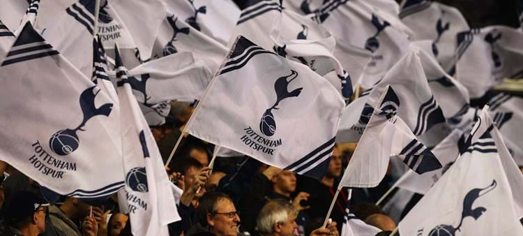

" 조직과 도시와 행인들로
가득한 세상에서,
단 하나뿐인 홋스퍼.
우리는 토트넘 홋스퍼이다. "
Tottenham Horspur Football Club
지금까지 FA컵에서 우승한 유일한 팀이 되었다. 1951년 우리는 2부 리그에서 챔피언으로 올라온 지 12개월 만에 처음으로 잉글랜드 1부 리그 우승을 차지했다.
그리고 10년 후, 우리는 훨씬 더 높은 곳에 도달했고, 현대 시대에 리그와 FA컵 더블을 완성한 첫 번째 팀이 되었다. 빌 니콜슨은 그때 우리의 매니저였지만, 그는 단순한 매니저 이상이었다.
그는 토트넘이었다.
우리 팀의 전 선수였던 그는 토트넘 홋스퍼에서 살아 숨쉬며 16년 동안 지휘봉을 잡은 우리를 큰 성공으로 이끌었다.
그의 감독 아래 우리는 1963년 유러피언컵 위너스컵 영광으로 유럽 주요 트로피를 거머쥔 최초의 영국팀이 되었고,
1962년과 1967년에 FA컵을 추가로 수집했으며 1971년과 1973년에 리그컵에서 우승했으며
1972년 UEFA컵을 들어 올려 유럽 성공을 한 번 더 맛보았다. 1980년대, 1990년대, 2000년대 내내 FA컵, UEFA컵, 리그컵 트로피가 이어졌고,
오늘날까지 우리는 혁신을 위해 노력하고 더 많은 실버웨어를 추구하며 놀라움을 금치 못했다. 우리는 배가 고프고, 진보적이며, 우리는 세계적인 수준의 훈련 센터를 새로 짓고, 우리가 118년 동안 홈 게임을 했던 화이트 하트 레인의 부지를 겹쳐서, 뛰어난 현대적인 새로운 경기장으로 이사했다.